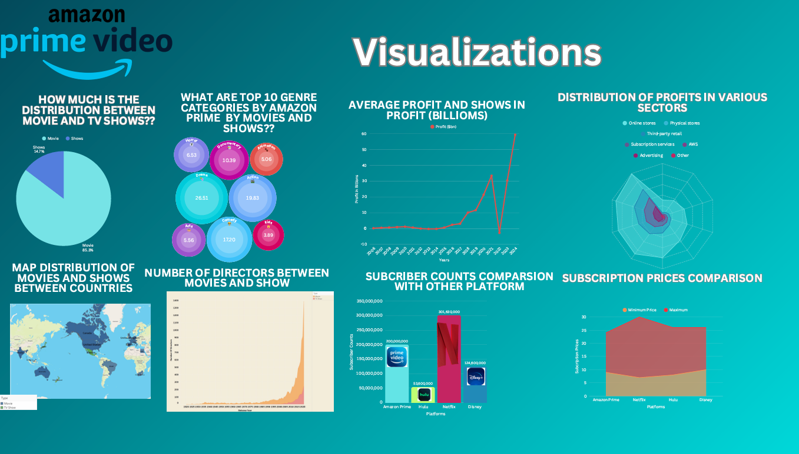
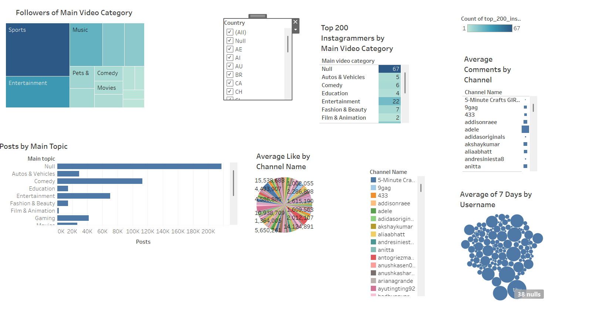

Analyzed 3K+ Amazon Prime media records using Tableau dashboards. Discovered key content performance and profitability patterns, and revealed the contribution of genre trends to subscription growth and retention strategies.
 This project analyzes movies and TV shows on Amazon Prime, focusing on director, category, rating, and release-year trends. It explores which directors are most prominent by type (movie vs TV show) and which categories dominate by count and rating. Using a data-visualization approach, we track quality over time by rating and release year. The goal is to provide insights for creators, marketers, and viewers to make informed decisions based on data.
With a vast catalog and changing audience preferences, Amazon Prime requires data-driven decisions. This analysis supports content planning, audience understanding, and competitive benchmarking by revealing what performs well, when, and why—ultimately guiding strategy for creators, studios, and marketers.
Dataset: Listings of movies and TV shows on Amazon Prime (11 columns, ~9.6k rows). Includes title type, director, category/genre, release year, rating, and more.
Use: Cleaned and modeled for trend analysis (ratings over time, top categories, prolific directors) and for comparative visuals between movies and TV shows.
Example sources: curated public datasets and industry summaries (e.g., Business of Apps – Amazon stats).